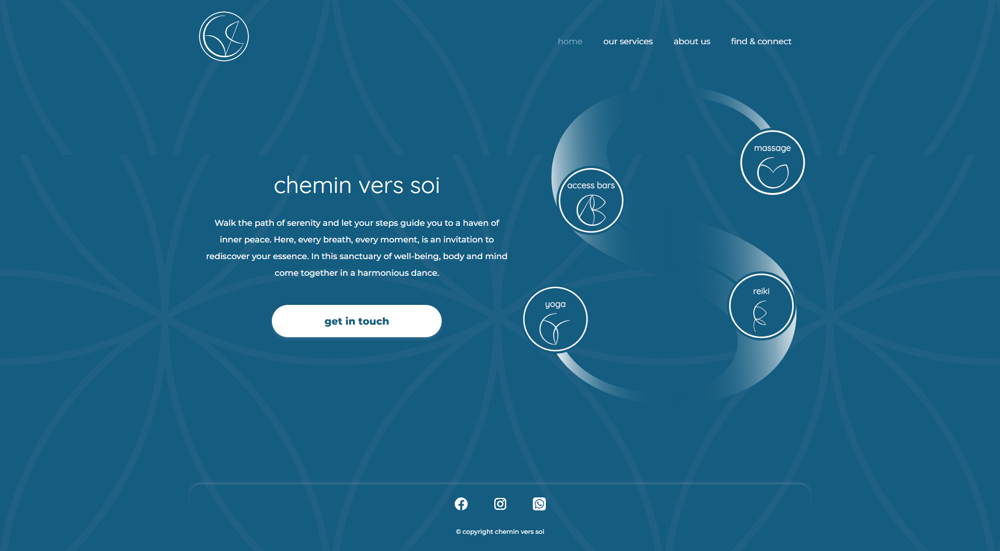
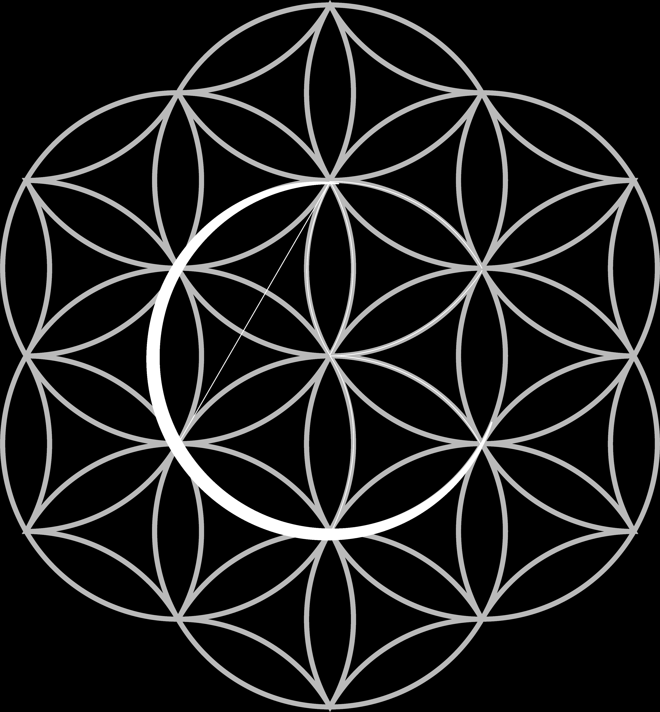
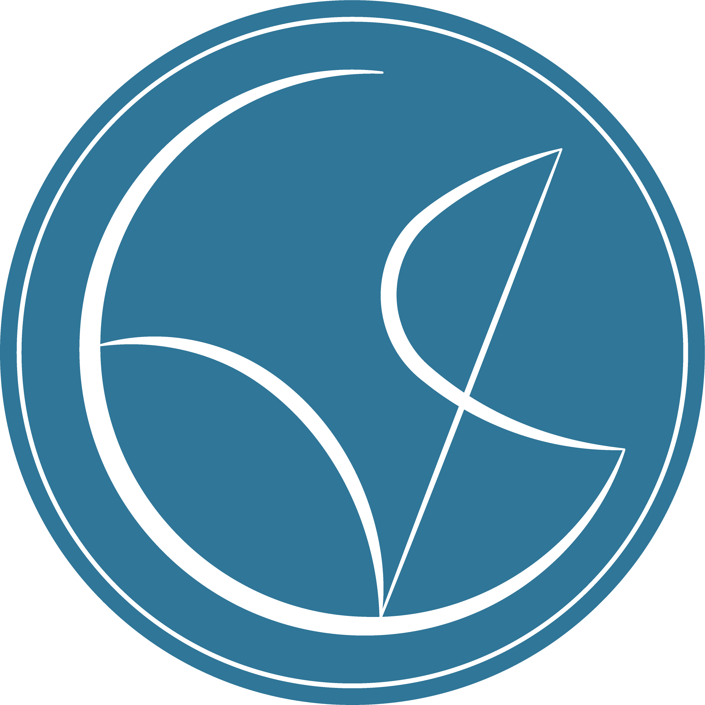
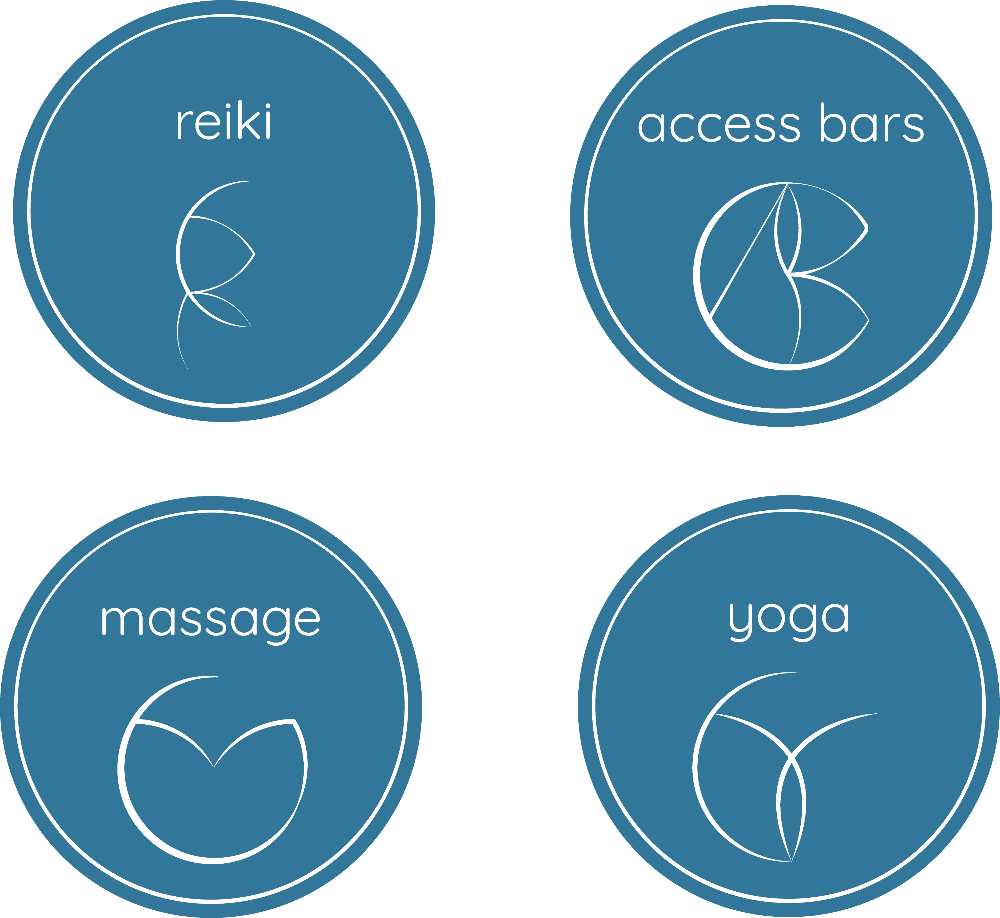
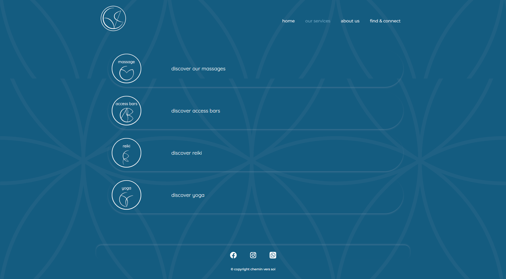
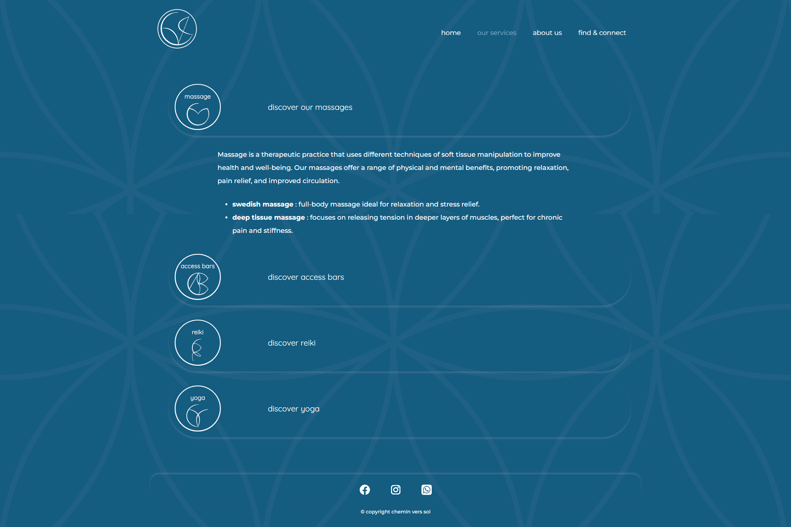
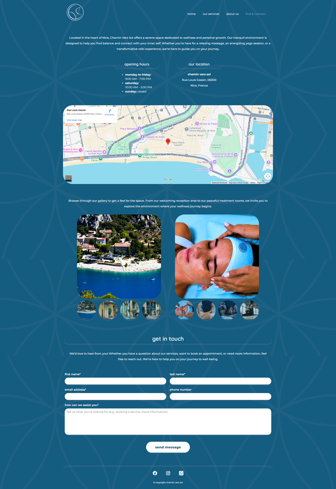

The homepage — service icons positioned around the brand's Flower of Life sacred geometry motif.
Overview
A wellness practice
brought online
Chemin vers soi — "the path toward oneself" — is a wellness practice in Nice, France offering massage, reiki, access bars, and yoga. The project required a complete visual identity and a fully coded responsive website.
The practice needed an online presence that communicated warmth and professionalism — semantic HTML, responsive layout, and clear information architecture across four distinct pages.
The project spans both graphic design and front-end development: creating the visual identity in Illustrator, then building a multi-page website entirely in hand-coded HTML and CSS.
The Brief
Identity and interface
from scratch
The practitioner had no existing digital presence. The brief required a logo, visual identity system, custom iconography for each service, and a complete website — both a discovery tool for new clients and a booking pathway for returning ones.
Core requirements
Homepage introducing the practice and its philosophy
Services page detailing massage, reiki, access bars, and yoga
About page building trust through personal narrative
Contact page with location, hours, gallery, and enquiry form
Visual Identity
The Flower of Life
as foundation
The visual system needed to feel spiritual without being decorative — grounded, not performative.
The Flower of Life — a sacred geometry pattern — became the structural origin of the entire identity. The logo was not placed on top of the geometry; the letterforms were drawn directly within it. Each arc of the CVS acronym traces a curve already present in the pattern, making the mark feel discovered rather than invented.
The same logic governs the service icons. Each symbol — for reiki, access bars, massage, and yoga — was drawn using the same curved vocabulary, then set within the same circular frame as the logo. The result is a system with genuine visual coherence: every element shares an origin.
01 — Source Geometry

The Flower of Life with the CVS letterforms traced within its existing arcs. The logo emerges from the pattern — it does not sit on top of it.
02 — Logo Mark

The final logo mark — C, V, and S isolated from the geometry, rendered in white on the brand's primary teal, within the same circular frame used across the full system.
03 — Service Iconography

Reiki, access bars, massage, and yoga — each icon shares the logo's line weight, curve style, and circular frame, creating unity across the identity system without any icon feeling generic.
Colour Palette
Teal depth,
warm presence
Deep Teal
Primary Blue
Light Teal
Warm White
The palette deliberately avoids the sage-green-and-watercolour approach that dominates wellness branding. Deep teal tones ground the site in professionalism while the Flower of Life pattern adds spiritual warmth without competing for attention.
Services
Four practices,
one clear system


Services overview (left) and expanded detail with treatment types including Swedish and deep tissue massage (right).
Each service uses the same interaction pattern: an icon and title that expands on click to reveal detailed descriptions and treatment types. This accordion structure keeps the page scannable while offering depth on demand.
Contact & Location
Multiple pathways
to connection

The Find & Connect page — embedded map, location photography, opening hours, and enquiry form.
The contact page integrates a Google Maps embed for the Nice location, opening hours, a photo gallery showing the physical space and treatments, and a structured enquiry form. Social links — WhatsApp, Instagram, Facebook — provide alternative contact channels the practitioner actually uses.
Development
Code as
craft
The website was built entirely in hand-coded HTML and CSS — no Bootstrap, no JavaScript frameworks, no templates. This constraint forced every layout decision to be intentional and every responsive breakpoint to be considered rather than inherited.
Custom SVG assets — the company logo, service-specific icons, and the Flower of Life background pattern — were created in Illustrator and integrated directly into the markup. The site was designed to be maintainable by a non-technical owner, with clean, readable code and a clear file structure.
Technical scope
4 responsive pages — homepage, services, about, find & connect
Custom SVG logo and service iconography
Flower of Life background pattern as unifying visual element
Google Maps embed and photo gallery
Contact form with structured fields
Social media integration — WhatsApp, Instagram, Facebook
Outcome
Design and development
as one practice
Chemin vers soi demonstrates that brand identity and front-end development are not separate disciplines. The visual language and the code that delivers it were designed together — each decision informed the other.
The result is a website that feels like the practice itself: unhurried, considered, and genuinely warm.